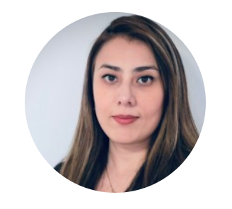
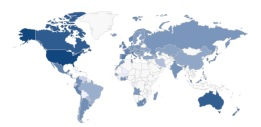
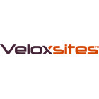

About
Known as a determined girl among her peers, Negin brings a background with diverse work experience and strong work ethic at her workplaces.
With an extensive involvement in different fields from design to development, she's come up with a strong passion to continue her dreams as a software developer.


Education
- Master's Degree in Computer Science – University of Illinois at Urbana-Champaign, USA
- Bachelor's Degree in Computer Engineering Majoring in Software – Azad University Tehran Central Branch, Iran

Skills
*Please note that the proficiency level of the skills varies.
Python
PostgreSQL
C#
SQL Server
Redis
T-SQL
PG-SQL
LINQ
PL/SQL
Git
LangChain
OpenAI APIs
N8N
RAG
PG-Vector
Supabase
Spark
Tableau
Dapper
Entity Framework
Azure
Amazon
Atlassian / Jira
Azure DevOps
Trello
JavaScript
React
Angular

Experience
- Software Engineer @ Infinite Investment Systems (Jun. 2021 – Present)
- IIS is a software company specialized in financial services. I mainly work on the CMS project of one of the company’s clients. I also Help with the development of a data platform using python technology stack.
- Some samples of my tasks are as follows:
- Architecting and Development of a CMS and its required cloud services
- Architecting an developement of the could services
- Development of Harmony-Cloud in Python platform

- Developer @ Valtech (Jun. 2018 - May 2021)
- Valtech is a consulting company that has several branches around the world. As a developer at Valtech, I worked with .Net MVC, Sitecore CMS, Azure Cloud Services, Sql Server and Coveo to develop web applications.
- Some samples of my tasks were as follows:
- Site Maintenance
- Sitecore Active Directory Single Sign On Integration
- Integrating Microsoft Graph API to work with Azure Active Directory
- Developing Federated Authentication with LinkedIn and Facebook
- Developing Sitecore (components, forms, etc.)
- Integrating Coveo.
- Integrating AngularJS, Dapper and Auto Mapper with a Sitecore project.

- .Net Developer @ Cineplex (Feb. 2017 - Mar. 2018)
- Cineplex.com website has millions of visitors, and has lots of dynamics that change regularly. As the primary developer of Cineplex.com website, I contributed to develop, architect and maintain the ".com" website. Technologies used for the website consisted of .Net MVC Framework, Web API 2+, Agility CMS (Content Management System), AngularJS, SQLServer and cloud solutions such as Azure Application Insights.
- Some samples of my tasks were as follows:
- Developing and contributing to redesign and architect the main pages of the websites, such as theatre details page, or movie details page.
- Developing and contributing to architectural design of the APIs of Cineplex.com and Cineplex Mobile App using .Net Web API.
- Architecting data retrieval and cache storage.
- Maintain the old API of Cineplex Mobile App.
- Thinking out of the box and providing valid solutions, specially, at short notice. For example when third party solutions were changed and obsolete, or when the revenue generating projects needed rapid solutions.
- Adding unit test with Moq to Cineplex.com web application.

- .Net Developer (Contract) @ Infinite Investment Systems (Aug. 2016 - Jan. 2017)
- Developing optimetry web application, using .Net MVC, SQL Server, as well as KendoUI and AngularJS.

- Software Developer @ Nymity (Feb. 2015 - Aug. 2016)
- Confidential, secured, private, etc. are the words that you more often hear at the age of technology, specially, at organizational level. Nymity provides various solutions to address the privacy needs such as providing reports about jurisdictional rules and regulations, benchmark assessment, etc. As a developer at Nymity, I contributed to develop Nymity Tools using ASP.Net, SQLServer, SSRS, Sitecore CMS (Content Management System), as well as JQuery, KendoUI and AngularJS. I also contributed briefly to maintain Attestor and Privawoks that were other products of the company, at the time.
- Some samples of my tasks were as follows:
- Redesign of Nymity Tools Map, which visualized aggregated Sitecore contents in a map. Using this feature, the users could search the data by provided search controls, and see the result on the map. Query occurred using Coveo APIs, and aggregated data was displayed on the map.
- Developing and contributing to architectural design of the APIs of Cineplex.com and Cineplex Mobile App using .Net Web API.
- Redesign and development of the user management dashboard of Nymity Tools, using KendoUI.
- Fully back-end development of a new report management feature. It was a new feature, and needed architectural modeling, data storage strategies such as caching, performance optimization, etc. I also created the SSRS reports based on the user selected criteria. Scheduled the reports using Hangfire APIs and WCS services.

- Developer @ Medworxx (Mar. 2012 - Feb. 2015)
- LMS is one of the solutions of Medworxx that has been designed to address healthcare organizations requirements. As a developer I contributed to maintain the old LMS application that was developed using Cold Fusion. I also contributed to the development of the new version of the system. The new version was created all from scratch, and was developed using the core framework of Patient-Flow, another product of Medworxx, SQLServer, .Net MVC, C#, JQuery and KendoUI.
- Some samples of my tasks were as follows:
- Debugging and developing the old LMS application.
- Gathering hospital specific requirements, developed in the old application, and aggregate them to be usable in the new .Net version.
- Developing user management dashboard of the application.
- Developing assign and bulk-assign of courses, exams and surveys, in the new .Net version.
- Developing the content dashboard for creating courses.
- Developing the viewer of the learning items that used contents and controls created by the administrators of the system.

- Developer (Contract) @ Site Technologies (Sep. 2011 - Mar. 2012)
- LMS is one of the solutions of Medworxx that has been designed to address healthcare organizations requirements. As a developer I contributed to maintain the old LMS application that was developed using Cold Fusion. I also contributed to the development of the new version of the system. The new version was created all from scratch, and was developed using the core framework of Patient-Flow, another product of Medworxx, SQLServer, .Net MVC, C#, JQuery and KendoUI.
- Some samples of my tasks were as follows:
- Debugging and developing the old LMS application.
- Gathering hospital specific requirements, developed in the old application, and aggregate them to be usable in the new .Net version.
- Developing user management dashboard of the application.
- Developing assign and bulk-assign of courses, exams and surveys, in the new .Net version.
- Developing the content dashboard for creating courses.
- Developing the viewer of the learning items that used contents and controls created by the administrators of the system.

- Developer (Co-Op and Internship)
- As an intern in E&E Company in Summer 2010, I contributed to development of both back-end and front-end of the systems, using SQL Server, C# and .Net Framework, as well as LLBO Gen-Pro, Telerik Components, Javascript etc.
- Developing a windows application for video archive of Mahak charity hospital, a pediatric cancer research center and hospital, as my university co-op project, supervised by Segal Rayaneh Tam Company in Autumn 2009.

Certifications
- Tau Beta Pi Membership - USA Engineering Honor Society
- Microsoft Certified: Azure Data Scientist Associate
- MCSD - App Builder
- MCSA - Web Appications
- Sitecore Certified Professional
- MCP - Programming in C# Specialist
Contact
Email: nkashkooli@outlook.com